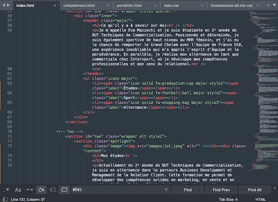
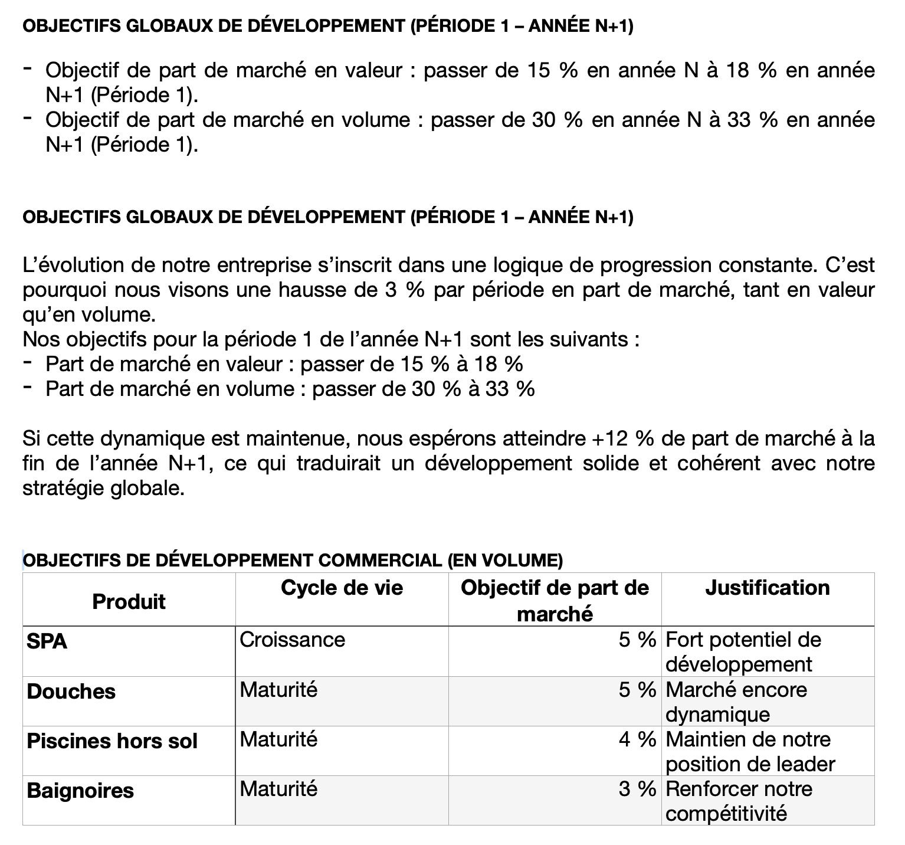
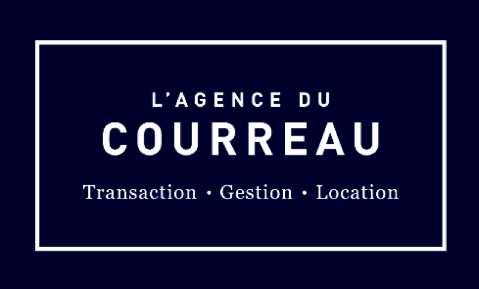

Portfolio
Déterminée sur le terrain, engagée dans mes projets
Excel
Dans le cadre de ma formation en BUT Techniques de Commercialisation, j’ai réalisé plusieurs travaux sur Excel me permettant de développer mes compétences en analyse de données, en gestion de tableaux et en création de graphiques. Ces exercices m’ont appris à organiser efficacement l’information, à automatiser certaines tâches grâce aux formules et à présenter des résultats de manière lisible et professionnelle. Ce projet illustre ma capacité à manipuler des données et à utiliser Excel comme véritable outil d’aide à la décision.
Canva
J’utilise régulièrement Canva pour réaliser des supports visuels attractifs et professionnels. Que ce soit pour créer des affiches, des présentations, des publications ou des visuels destinés aux réseaux sociaux, j’ai appris à jouer avec les couleurs, les typographies et la mise en page afin d’obtenir un rendu cohérent et impactant. Ces projets témoignent de ma créativité, de ma capacité à communiquer visuellement et de mon aisance avec les outils de design accessibles.
GIMP
Grâce à GIMP, j’ai pu m’initier à la retouche d’images et au montage photo de manière plus technique. Cet outil m’a permis d’apprendre à détourer des éléments, ajuster les couleurs, retoucher des visuels et créer des compositions plus complexes. J’ai aussi découvert l’importance des calques, des masques et de la précision dans chaque détail pour obtenir un rendu propre et harmonieux. Ces projets illustrent ma capacité à manipuler des outils graphiques avancés, à expérimenter différentes techniques et à produire des visuels soignés, adaptés à des besoins de communication variés — que ce soit pour des affiches, des visuels web ou des présentations.
Projet Web HTML CSS

Dans le cadre de ma formation, j’ai réalisé un projet de création de site web en utilisant exclusivement HTML et CSS. Ce travail m’a permis de comprendre la structure d’une page web, d’organiser le contenu de manière cohérente et d’appliquer un style visuel adapté grâce aux feuilles de style. J’ai appris à intégrer des images, des liens, des sections, ainsi qu’à utiliser des classes et des identifiants pour personnaliser l’apparence du site. J’ai également découvert l’importance de la mise en page, de la clarté et de l’ergonomie pour rendre un site agréable à consulter. Ce projet démontre ma capacité à concevoir un site vitrine simple, responsive et fonctionnel, tout en réfléchissant à l’expérience utilisateur.
Actions réalisées en SAE

Au cours de mes différentes SAE (Situations d’Apprentissage et d’Évaluation), j’ai mené plusieurs projets concrets qui m’ont permis d’appliquer mes compétences en marketing, communication, vente et gestion de projet. Ces travaux m’ont amenée à analyser des besoins, proposer des solutions adaptées, réaliser des études de marché, concevoir des supports visuels ou encore préparer des argumentaires commerciaux. Les SAE ont été l’occasion de travailler en équipe, de respecter des deadlines et de produire des livrables professionnels, illustrant ma capacité à passer de la théorie à la pratique.
Parmi toutes les SAE que j’ai réalisées, la SAE Vente est sans doute celle qui m’a le plus marquée. Même si elle ne durait que quelques jours, elle nous a demandé énormément de travail et d’implication. Cette SAE nous a clairement mis à l’épreuve : gestion du stress, rythme intense, prise d’initiative… tout y est passé. Mais c’est aussi pour cette raison que je l’ai particulièrement appréciée. Elle nous a plongés dans une réalité proche du terrain, où il fallait être réactif, comprendre rapidement les besoins du client et proposer des solutions pertinentes. Cette expérience m’a beaucoup appris, autant sur la vente en elle-même que sur ma capacité à m’adapter, à argumenter et à travailler efficacement sous pression.
Stages
Stage à l’Agence du Courreau – Transaction immobilière

Lors de mon stage à l’Agence du Courreau, j’ai découvert de manière concrète le fonctionnement du secteur immobilier. Encadrée par plusieurs agents spécialisés, j’ai pu participer activement aux différentes étapes d’une transaction : pige immobilière, estimations de biens, rédaction de fiches de vente et observation de visites, de négociations et de rendez-vous notariaux. J’ai également observé les stratégies commerciales utilisées par les professionnels, notamment les méthodes FOCA, SONCAS(E) et PAC, ce qui m’a permis de mieux comprendre l’importance du questionnement, de l’argumentation et de l’adaptation au client. Cette expérience enrichissante m’a permis de développer mes compétences en relation client, en organisation et en analyse tout en découvrant un secteur dynamique, exigeant et basé sur la confiance.
Compétences développées durant mon stage
Ce stage m’a permis de renforcer des compétences essentielles dans le domaine commercial et relationnel. J’ai appris à analyser les besoins des clients grâce aux méthodes SONCAS(E) et FOCA, ce qui m’a aidée à mieux comprendre leurs motivations et à adapter mon discours. J’ai également développé mes compétences en organisation, notamment dans la préparation des visites, la mise à jour des annonces et le suivi des dossiers.
Sur le plan relationnel, j’ai progressé dans ma capacité à communiquer de manière professionnelle, à écouter activement et à argumenter avec méthode, notamment grâce à l’utilisation de la technique PAC pour répondre aux objections. Enfin, cette expérience m’a permis de découvrir un environnement exigeant, où la rigueur, la réactivité et la gestion du stress sont essentielles pour accompagner efficacement les clients dans leurs projets immobiliers.
Perso
En dehors de mes études et de mes expériences professionnelles, je m’investis pleinement dans mes projets personnels, notamment dans ma pratique du rugby au niveau élite. Mon engagement sportif au MHR féminin m’a appris la discipline, la persévérance, l’esprit d’équipe et la gestion du stress, des qualités que je mets naturellement au service de mes projets académiques et professionnels. J’aime également découvrir de nouveaux environnements, relever des défis et apprendre continuellement, que ce soit à travers le sport, des activités créatives ou des projets personnels. Ces expériences contribuent à développer ma motivation, mon autonomie et ma capacité à m’adapter, autant d’atouts qui définissent ma personnalité et ma manière d’aborder le travail.
conclusion
 Tout au long de ma formation et de mes différentes expériences, j’ai eu l’opportunité d’explorer de nombreux domaines et de développer un large éventail de compétences, aussi bien personnelles que professionnelles. Chaque projet mené, chaque SAE réalisée, chaque mission en alternance ou en stage m’a permis de mieux comprendre le monde du commerce et de me rapprocher un peu plus de mes objectifs. Mon engagement sportif au MHR féminin, lui aussi, a joué un rôle essentiel dans mon évolution : il m’a appris la discipline, la persévérance et l’importance du collectif. Ce portfolio reflète donc un parcours construit avec sérieux, curiosité et détermination. C’est une manière pour moi de mettre en lumière mes progrès, mes apprentissages et tout le travail que j’ai fourni pour avancer avec constance et ambition.
Tout au long de ma formation et de mes différentes expériences, j’ai eu l’opportunité d’explorer de nombreux domaines et de développer un large éventail de compétences, aussi bien personnelles que professionnelles. Chaque projet mené, chaque SAE réalisée, chaque mission en alternance ou en stage m’a permis de mieux comprendre le monde du commerce et de me rapprocher un peu plus de mes objectifs. Mon engagement sportif au MHR féminin, lui aussi, a joué un rôle essentiel dans mon évolution : il m’a appris la discipline, la persévérance et l’importance du collectif. Ce portfolio reflète donc un parcours construit avec sérieux, curiosité et détermination. C’est une manière pour moi de mettre en lumière mes progrès, mes apprentissages et tout le travail que j’ai fourni pour avancer avec constance et ambition.
 Aujourd’hui, je me sens prête à poursuivre mon chemin en relevant de nouveaux défis, en découvrant de nouveaux environnements et en continuant à apprendre chaque jour. Mon objectif est de m’épanouir dans le domaine du commerce, de mettre en pratique tout ce que j’ai acquis et d’enrichir encore mes compétences grâce à de nouvelles responsabilités et de nouveaux projets. Je sais que le parcours est encore long, mais chaque expérience déjà vécue m’a confortée dans l’idée que je suis sur la bonne voie. Je veux continuer à avancer avec la même énergie, la même curiosité et le même enthousiasme. Ce portfolio n’est qu’une étape parmi d’autres, mais il symbolise déjà beaucoup : mon évolution, ma motivation et la personne que je deviens au fil du temps. Et ce n’est que le début.
Aujourd’hui, je me sens prête à poursuivre mon chemin en relevant de nouveaux défis, en découvrant de nouveaux environnements et en continuant à apprendre chaque jour. Mon objectif est de m’épanouir dans le domaine du commerce, de mettre en pratique tout ce que j’ai acquis et d’enrichir encore mes compétences grâce à de nouvelles responsabilités et de nouveaux projets. Je sais que le parcours est encore long, mais chaque expérience déjà vécue m’a confortée dans l’idée que je suis sur la bonne voie. Je veux continuer à avancer avec la même énergie, la même curiosité et le même enthousiasme. Ce portfolio n’est qu’une étape parmi d’autres, mais il symbolise déjà beaucoup : mon évolution, ma motivation et la personne que je deviens au fil du temps. Et ce n’est que le début.